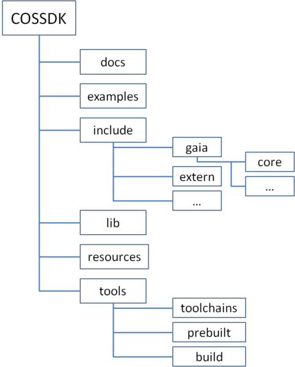
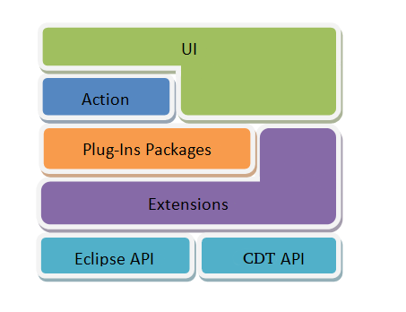

The Architecture of GAIA SDK and GAIA IDE

Documents here are mainly generated by doxgen tool, and will be included in the final SDK.
This contains all shared lib needed by app dev to link to
This is a collection of arm-eabi related tools used to compile and link target app for arm platform.
ools are used on the host machine to help build final ###tools/build###This contains many make file scripts, which are used to help make app dev easy. For more details, please see "How to build app" from GAIA SDK.
